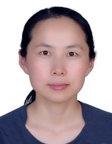
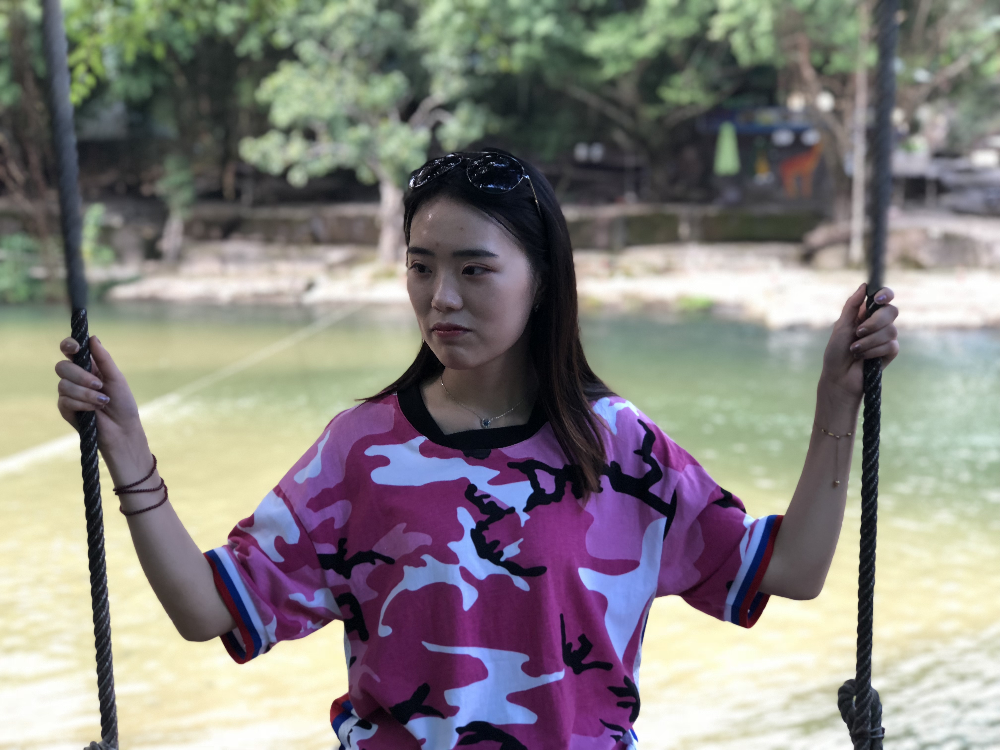
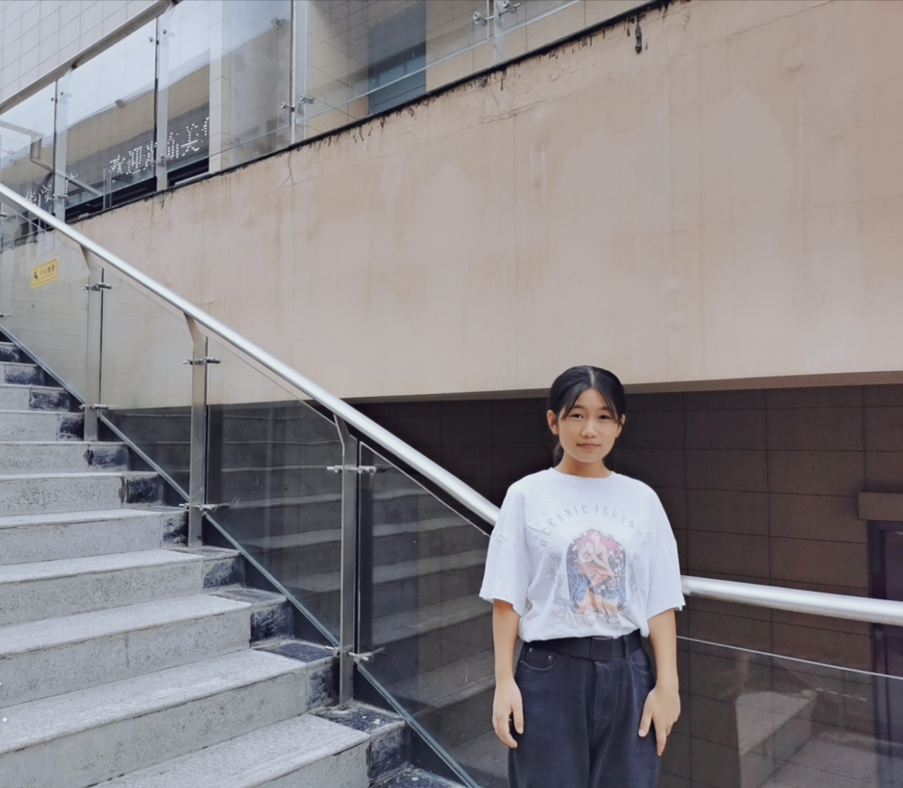
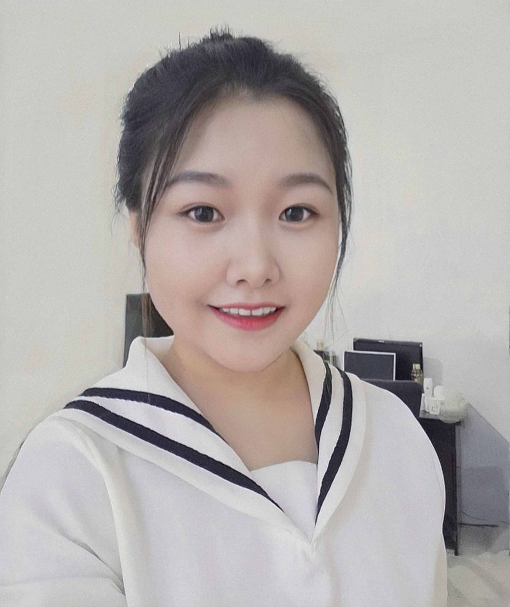
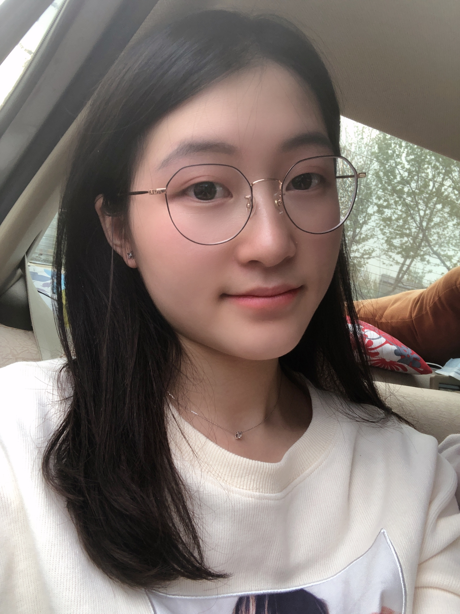

靳军，女，博士毕业于北京理工大学计算机应用技术专业，中国计算机学会（CCF）会员。物联网与区块链技术实验室骨干教师。研究方向为区块链技术、智能物流、服务计算。作为核心人员参与多项科研项目，包括国家重点研发项目、北京市社科基金等重要课题，发表学术论文20余篇，发明专利及软著近20项，荣获省部级奖项2项。曾在首发集团从事科研及工程工作6年，具备丰富的科研和工程实践经验。

于真，副教授，2010年1月毕业于北京科技大学，获计算机应用技术专业工学博士学位。2010年至今在北京物资学院学院信息学院计算机技术与物联网工作系从事教学和科研工作。现为物联网与区块链技术实验室骨干教师。主持或参与国家自然科学基金1项，市局级以上科研项目5项，发表论文30余篇，第一作者论文16篇。研究领域为对等网络信任，区块链技术、电子商务信任，网络信息安全等。
李洁，北航计算机博士，助理研究员，中国计算机学会（CCF）会员。研究方向为区块链、形式化验证、隐私计算等。2012年以来一直在北京物资学院信息学院工作，物联网与区块链技术实验室重要成员。具有丰富的项目组织以及技术开发经验，参与国家级、省部级等纵向课题12项，横向课题11项。发表学术论文近20篇，荣获协会奖项2个，授权国家发明专利7项，计算机软件著作权9项。
可信边缘计算:

曹婷婷，女，陕西榆林人， 2018级物流工程专业硕士生，主要研究方向和关注的领域是区块链技术、智能物流溯源系统。可信边缘计算组组员。在校期间我认真学习，积极跟随导师做课题，多次参与重点课题调研以及项目报告撰写工作等。参与并成功授权国家发明专利2项，计算机软件著作权4项，发表学术论文1篇。 在实验室这个大家庭中学习与成长，使我学会了做任何事情都要有认真、严谨的态度和不懈努力的精神，掌握了编程、写作文章能力，同时，也收获了老师们的悉心教导、师弟师妹们的暖心帮助，让我的研究生生活充实且丰富。 座右铭：没有命中注定的结局，只有不够努力的过程。
冯子宝，江苏宿迁人，18级计算机软件与理论专业的硕士研究生。可信边缘计算组组员，目前研究方向是智能合约服务组合架构。 加盟IBT的两年内，了解了区块链基本知识，积极参加实验室的科研，参与实验室实际课题。在团队学习中，增强了团队协作意识，明白与人交流和沟通的重要性。同时在实验室里，提高了自己动手能力；在思考问题时，需要全面、仔细；做事有自己明确的想法和计划；需要快速适应不同的环境。在IBT里的经验让我可以学以致用，这让我有很大成就感与幸福感，这些宝贵的经验为未来的自我发展有着重要的意义，作为IBT一员，为实验室贡献自己的一份力量是荣幸的。 座右铭以及寄语：我始终相信“奋斗令我们的生活充满生机，责任让我们的生命充满意义，常遇困境说明你在进步，常有压力，说明你有目标”我们只有不断的丰富自己才不会令自己后悔。
师灵芝，女，陕西西安人，20级计算机应用技术专业在读硕士研究生。可信边缘计算小组组长。研究方向为区块链、物联网、移动智能边缘计算。本科阶段参与过实验室的大创项目，并取得校级二等奖的优异成绩。目前参与重点研发、自然基金申请等工作。授权1项国家发明专利和荣获1项计算机软件著作权。爱好跑吧。 从大三开始进入实验，并且第一志愿报考本校，又继续在实验室读研。到现在已经两年多的时间了，在这个团队中我积累了开发经验、学会了独立思考，更重要的是遇到了几位科研路上的启蒙导师、结交了一群志同道合的伙伴，让充满挑战的研究生阶段不再孤独、不再迷茫。 我的座右铭是：一场改变自己的劳作重要的不是我们将自己变成了什么，而是我们在改变自己时都做了什么。
可信隐私计算:
刘欣，女，河北沧州人，19级计算机科学与技术在读本科生。可信隐私计算小组组员。对新兴技术和事物有浓厚兴趣，喜欢桌球，有一定的自我学习能力，吃苦耐劳，热爱运动。研究方向为区块链、智能合约以及访问控制技术。曾参与1次大学生科学研究与创业行动计划项目并成功结项。目前正在参与大创深化项目。参与撰写计算机软件著作权1篇，积极配合实验室科研项目。 2019年入学第一周便进入实验室，等于在紧张的高中生活结束后，直接进入科研+学习的生活状态，是一种幸运，也感觉是一种挑战。在实验室一年多的时间里，在专业上有了卓越的成长，目前已熟练Android开发，Python绘图与可视化，掌握Java，solidity等多种语言，对专业的兴趣越来越浓。在这个有着20多名师兄师姐，师弟师妹以及多名老师的大家庭里受到了潜移默化的影响，无论是学习态度还是为人处事方面。我在各位老师以及师兄师姐们的指导与帮助下，不断提升专业知识，学会合作中独立，独立中合作。 座右铭以及寄语：“也许后续还有一个个难关，但勇敢走出第一步很重要，突破自我，不断成长”，希望实验室的大家都关关难过关关过，前路漫漫亦灿灿。
沈薇，女，江苏宿迁人，17级计算机科学与技术在读本科生。可信隐私计算组组员。爱好：绘画，写作。多次荣获专业排名第一名，是典型的“学霸”。研究方向为同态加密与区块链技术。参与多项横纵向研究课题，发表核心期刊论文2篇，计算机软件著作权2项，授权发明专利1项。参与两项大创项目，荣获1次校优秀大创项目一等奖，1次北京市大创深化项目推优。目前正在参与北京市毕业设计实培项目。 从大一就加入实验室，是团队最早的成员之一。在实验室的团队中学习与成长，一方面提高了科研能力和专业技能，避免把自己局限于课本知识上，动手能力得到增强；另一方面养成了团队合作的意识、不屈不挠的精神，提高了自信心和责任心，锻炼了语言表达能力，受益匪浅。 座右铭以及寄语：“有志者事竟成。”人生要有目标，自己去拼搏、去奋斗，在风雨中百折不挠、勇往直前。
田明宇，女，河南安阳人，20级计算机应用技术在读硕士研究生。爱好听音乐、看电影、看书等。可信隐私计算小组组员，研究方向为区块链与隐私计算。参与开发交科院和张家口项目等课题。通过实践项目能够明确意识到自己的不足，并找到努力的方向及目标。 实验室是个团结向上，真诚友爱的大家庭，同时也是夜以继日，埋头苦干的好去处。科研生活中除却培养了我的独立性之外，也大大提高了我的执行力。 座右铭以及寄语：愿自己的研究生生活以渺小启程，以伟大结束。